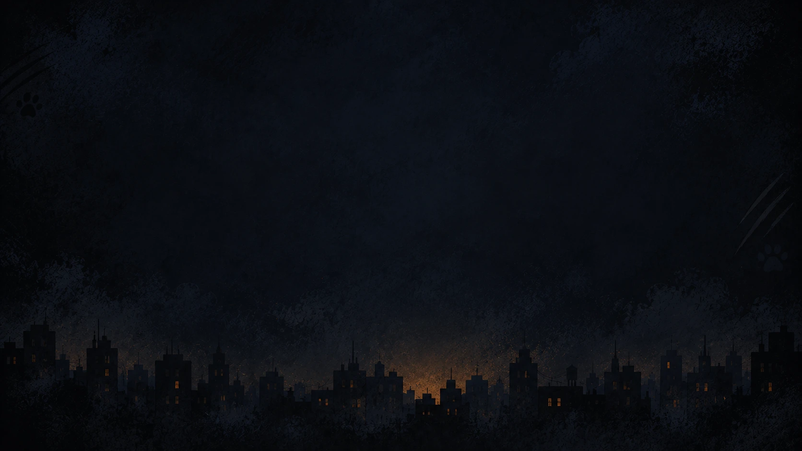

Hero scene
1672×941 · WebP · eager
Cat close-up
1672×941 · WebP · lazy
Community scene
1672×941 · WebP · lazy

Benefits background
1672×941 · WebP · CSS background
Brand mark
512×512 · WebP · favicon variants